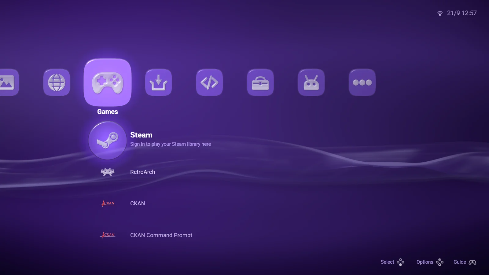
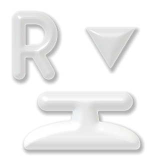
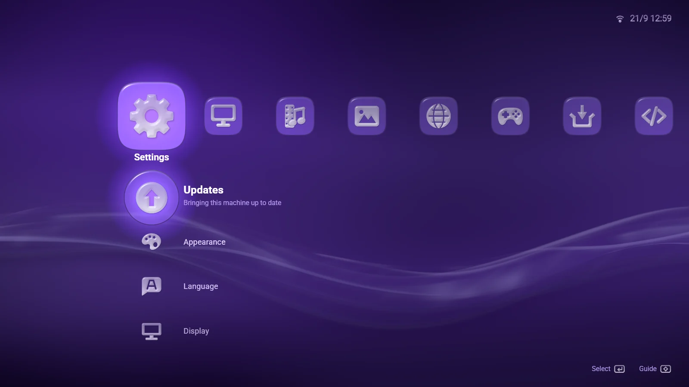
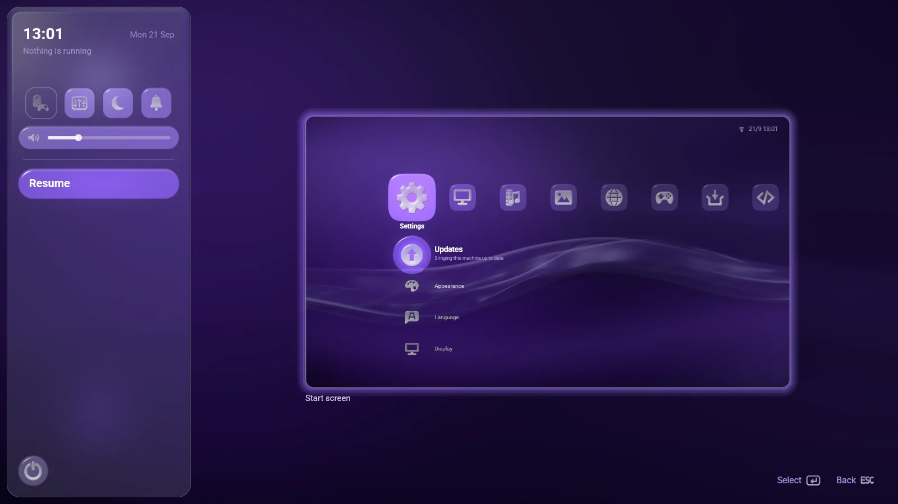
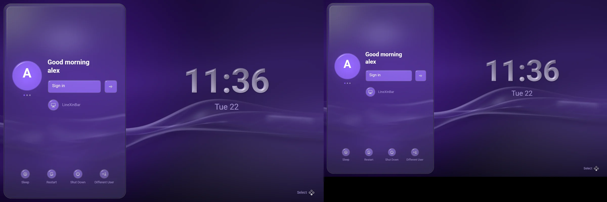

अवलोकन: LineXinBar, Linux के लिए XMB शैली का कंसोल डेस्कटॉप
कंसोल जैसा डेस्कटॉप
LineXinBar आपके गेम, ऐप और मीडिया के लिए कंसोल जैसा Linux डेस्कटॉप है। यह एक हल्के Wayland कंपोज़िटर को ऐसे लॉन्चर के साथ जोड़ता है जिसे आप गेमपैड, कीबोर्ड या माउस से चलाते हैं।
PlayStation 3 की XrossMediaBar (XMB) की तर्ज़ पर बने एक ही इंटरफ़ेस से अपनी लाइब्रेरी ब्राउज़ करें, सामान्य डेस्कटॉप ऐप्लिकेशन खोलें और स्क्रीन बदलें — स्क्रीन के आर-पार श्रेणियों की एक बार, हर श्रेणी में जो है उसका एक कॉलम, और जो भी चल रहा हो उसके ऊपर बस एक बटन दूर गाइड। यह पूरा सत्र है, किसी दूसरे डेस्कटॉप के ऊपर बैठा ऐप नहीं: फ़ाइल मैनेजर, सेटिंग, पासवर्ड के अनुरोध और अपडेट स्क्रीन सब इसी का हिस्सा हैं, और सब सोफ़े से पहुँच में हैं।

LineXinBar क्यों

सोफ़े के लिए डेस्कटॉपकंट्रोलर से ऐप, संगीत, वीडियो और तस्वीरें, और टाइप करना हो तो ऑन-स्क्रीन कीबोर्ड। आपके सारे गेम एक जगहSteam, और चाहें तो Epic Games, RetroArch के ज़रिए आपके अपने कंसोल गेम, और RPCS3 के ज़रिए PlayStation 3। कई डिस्प्ले, एक-दूसरे से स्वतंत्रहर स्क्रीन अपने रिज़ॉल्यूशन और रिफ़्रेश रेट पर, अपनी बार के साथ। बस एक बटन दूर गाइडऐप बदलें, आवाज़ और चमक बदलें या लॉन्चर पर लौटें — किसी भी चीज़ के अंदर से। इसे अपना बनाएँबारह उभार के रंग, पानी या रेशम का वॉलपेपर या आपकी अपनी फ़िल्म, दस भाषाएँ। डेस्कटॉप की ज़रूरी चीज़ें साथ मेंफ़ाइलें, स्क्रीनशॉट, स्क्रीन शेयर करना, फ़ाइल डायलॉग और सिस्टम अपडेट, आपके ऐप के साथ-साथ। स्क्रीनशॉट
स्क्रीनशॉट
प्रोजेक्ट के अपने रिलीज़ बिल्ड के एक नेस्टेड सत्र में लिए गए।



सिर्फ़ Gamescope नहीं
Gamescope एक आउटपुट का मालिक होता है और उस पर एक ऐप्लिकेशन को फैलाता है। LineXinBar वही छोटा-सा “एक ऐप्लिकेशन पूरी स्क्रीन भरता है” मॉडल रखता है — लेकिन हर जुड़ा हुआ डिस्प्ले अपने रेंडर लूप वाला असली आउटपुट होता है।
इसलिए अलग-अलग रिज़ॉल्यूशन और रिफ़्रेश रेट वाले डिस्प्ले किसी साझा धड़कन से बँधे रहने के बजाय स्वतंत्र रूप से चलते हैं, और हर एक की अपनी शुरुआती स्क्रीन होती है। यह किसी गेम का फ़्रेम नहीं, पूरा डेस्कटॉप सत्र है: ऐप्लिकेशन, फ़ाइलें, सेटिंग और अनुरोध सब इसी में रहते हैं।
 प्रोजेक्ट की स्थिति
प्रोजेक्ट की स्थिति
LineXinBar शुरुआती विकास में है, वर्ज़न 0.9.3 पर।
- हार्डवेयर टेस्टिंग अब तक ज़्यादातर दो डिस्प्ले वाले एक AMD ग्राफ़िक्स कार्ड पर हुई है; दूसरे निर्माताओं और कई GPU वाले सिस्टम को आज़माने के लिए और लोगों की ज़रूरत है।
- Steam गेम को Valve का Steam क्लाइंट चाहिए, जो नज़रों से दूर चलता है। Epic Games, RetroArch और PlayStation 3 वैकल्पिक पैकेज हैं।
- एक अकेली विंडो शेयर करना (पूरे डिस्प्ले के बजाय), जेस्चर नेविगेशन और वैरिएबल रिफ़्रेश रेट अभी नहीं हैं।
इसे रोज़ाना के डेस्कटॉप के तौर पर भरोसा करने से पहले जानी-पहचानी सीमाएँ पढ़ें — और अगर आप इसे अपने हार्डवेयर पर आज़माएँ, तो बताएँ कि कैसा रहा।
सोर्स कोड
LineXinBar GPL-3.0 के तहत मुफ़्त सॉफ़्टवेयर है, जिसे GitHub पर खुले में विकसित किया जाता है।
बग रिपोर्ट, हार्डवेयर टेस्टिंग, अनुवाद और कोड — सबका स्वागत है; कैसे, यह डेवलपमेंट पर देखें।